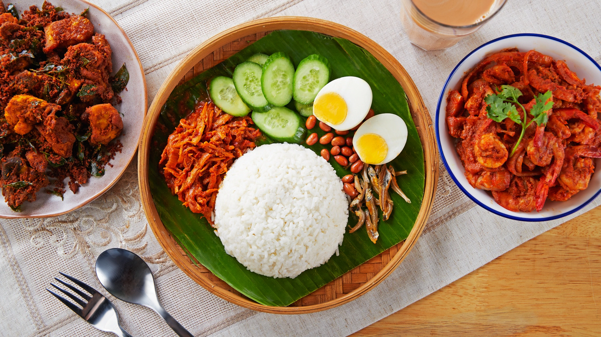

Nasi Lemak
Nasi Lemak is often regarded as Malaysia's national dish. It features fragrant rice cooked in rich coconut milk, imparting a creamy texture and subtle sweetness. Traditionally served on a banana leaf, Nasi Lemak is accompanied by a variety of sides, including spicy sambal, crispy fried anchovies, roasted peanuts, hard-boiled or fried eggs, and fresh cucumber slices, creating a harmonious blend of flavors and textures.

| Recipe Details |
| Portion |
2-3 servings |
| Preparation Time |
20 minutes |
| Cooking Time |
30 minutes |
| Difficulty |
Medium |
| Cuisine |
Malaysian |
| Taste Profile |
Rich, creamy, and slightly spicy |
| Serving Suggestions |
Best served hot with sambal, eggs, peanuts, and cucumber |
| Nutrition Facts (per serving) |
| Calories |
450 kcal |
| Fat |
18g |
| Saturated Fat |
12g |
| Carbohydrates |
50g |
| Sugar |
4g |
| Protein |
15g |
| Sodium |
500mg |
| Ingredients |
Measurement |
| Cooking oil |
2 tbsp |
| Shallots, finely sliced |
1 |
| Ginger, julienned |
1 inch |
| Garlic, minced |
1 clove |
| Rice, rinsed |
500 g |
| Coconut milk |
200 ml |
| Pandan leaves, knotted |
2 leaves |
| Red onion, sliced for sambal |
1 |
| MAGGI Sambal Tumis Paste |
2 tbsp or as desired |
| Anchovies, fried until crispy |
1.5 cups |
| Tamarind paste, diluted |
0.25 tsp |
| Water |
100 ml |
| Hard-boiled eggs, halved |
3 |
| Cucumber, sliced |
1 |
| Peanuts, toasted |
1 cup |
| MAGGI Cukup Rasa |
1 tbsp |
Instructions:
- In a pan, heat the cooking oil over medium heat. Sauté shallots, ginger, and garlic until fragrant and lightly golden.
- Add the rinsed rice to the pan and stir briefly to coat the grains in the aromatics. Transfer the mixture to a rice cooker.
- Add coconut milk, water, MAGGI Cukup Rasa, and knotted pandan leaves to the rice cooker. Stir well, then cook until the rice is fluffy and fragrant.
- For the sambal, heat a separate pan with oil. Sauté the sliced red onion until soft, then add MAGGI Sambal Tumis Paste. Stir well and let it simmer for 3-5 minutes.
- Add water, fried anchovies, tamarind paste, and a small amount of sugar to balance the flavors. Simmer until the sambal thickens, about 5-7 minutes.
- To serve, spoon the cooked rice onto a plate or banana leaf. Add sambal, hard-boiled eggs, cucumber slices, toasted peanuts, and extra fried anchovies as garnishes.